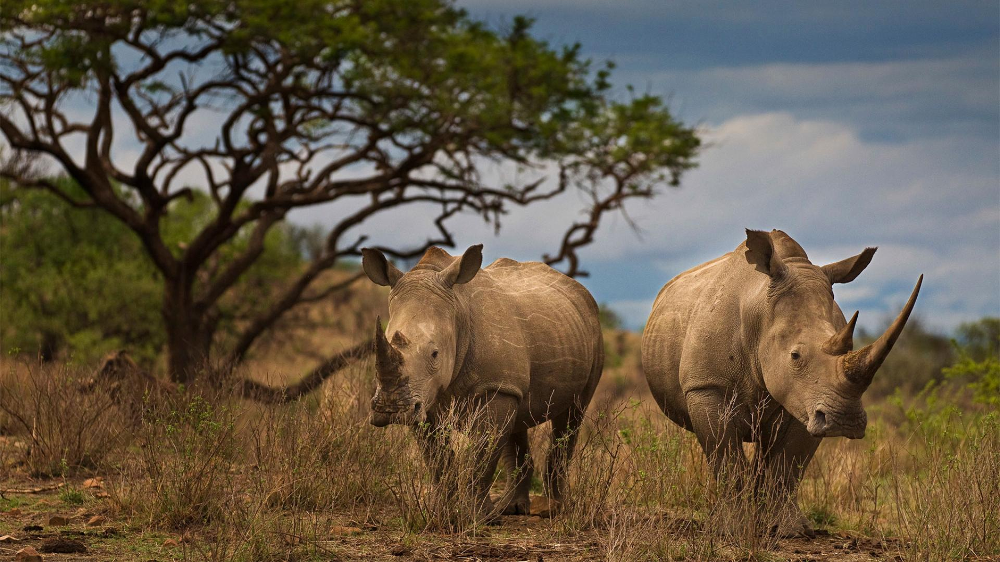
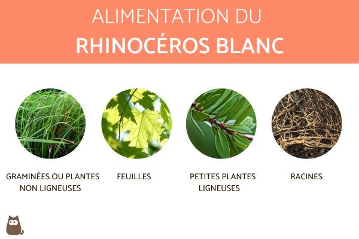
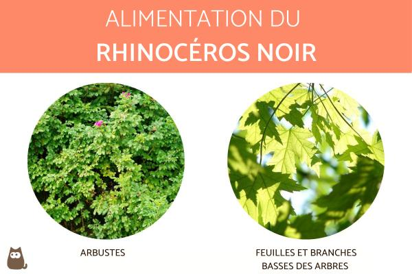
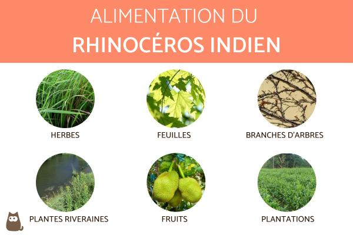
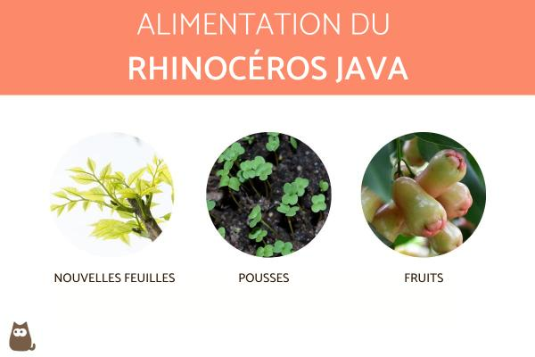
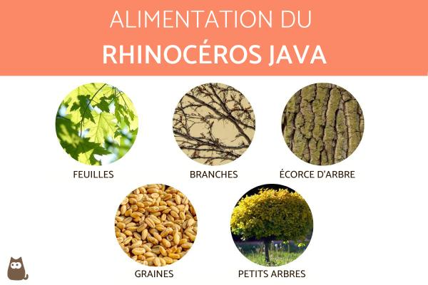
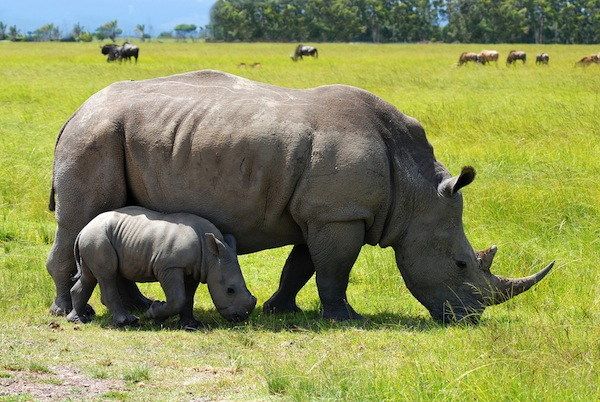
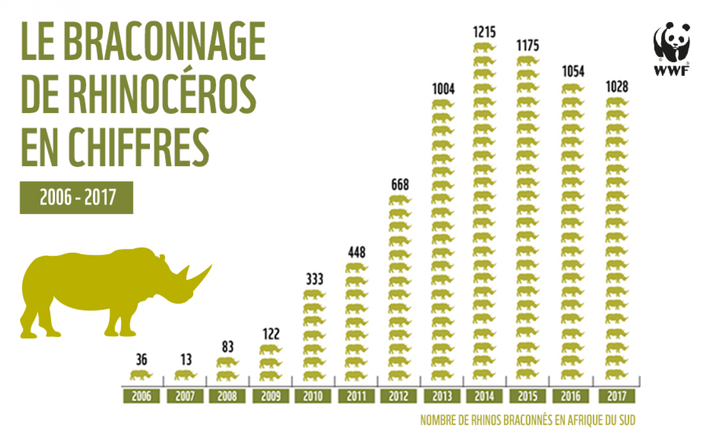
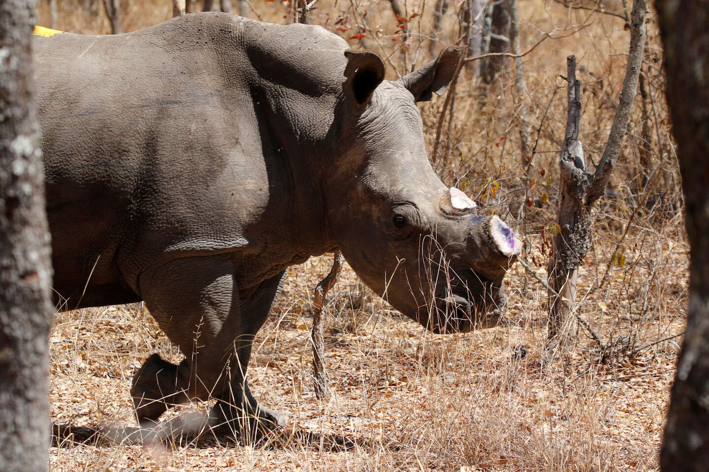

Les rhinocéros vivent normalement en solitaires mais, dans la savane, on peut parfois voir de petits troupeaux.
Ils vivent dans des prairies tropicales et subtropicales, dans la savanes, dans les forêts et dans les déserts
La journée les rhinocéros dorment, ils sont surtout actifs au crépuscule et la nuit.
Ce sont des animaux craintifs qui évitent les hommes. C'est lorsqu'ils se sentent menacés qu'ils attaquent.
Très rares, ces attaques peuvent parfois occasionner de graves blessures en raison de la puissance de l'animal et du danger que représente la corne.
En pleine course, un rhinocéros peut courir très vite et charger à une vitesse de l'ordre de 45 km/h (il est aussi rapide qu'un loup).
Dans des cas assez rares, les jeunes rhinocéros peuvent être la proie de grands félins. Les rhinocéros adultes n'ont aucun ennemi si ce n'est l'homme.
Il existe différentes espèces de rhinocéros: Rhinocéros d’Afrique, Rhinocéros noir, Rhinocéros blanc, Rhinocéros d’Asie, Rhinocéros unicorne d’Inde, Rhinocéros de la Sonde, Rhinocéros de Sumatra

Le rhinocéros est exclusivement herbivore. Il se nourrit de feuilles, plantes, baies sauvages, et passe également beaucoup de temps à brouter de l'herbe. Il ingère en moyenne 50 kg de nourriture par jour, il peut survivre plusieurs jours sans boire une seule goutte d’eau. Et pour cause, son régime alimentaire végétarien contient près de 50% d’eau.





Si une femelle est en chaleur, les mâles peuvent en venir à se battre. Le vainqueur fait sa cour à la femelle de façon curieuse : il marque son territoire avec son urine et ses déjections, faisant tourner sa queue à la manière d'un ventilateur pour épandre sur une plus grand surface ; en outre, les deux partenaires se pourchassent et se battent l'un contre l'autre avant l'accouplement. Après une gestation de 15 à 18 mois naît un petit qui peut rester deux ans et demi avec la mère. Il suit sa mère comme son ombre. Celle-ci est alors spécialement agressive et le défend même contre les membres de son espèce mais à la naissance du suivant, elle le chasse. Les rhinocéros ont environ un petit tous les trois à quatre ans

| espèce | population | lieux |
|---|---|---|
| rhinocéros noir | un peu plus de 5 000 | Afrique |
| rhinocéros blanc | un peu plus de 20 000 | Afrique |
| Rhinocéros unicorne d’Inde | 3 500 | Asie |
| Rhinocéros de la Sonde | 63 | Asie |
| Rhinocéros de Sumatra | moins de 100 | Asie |

